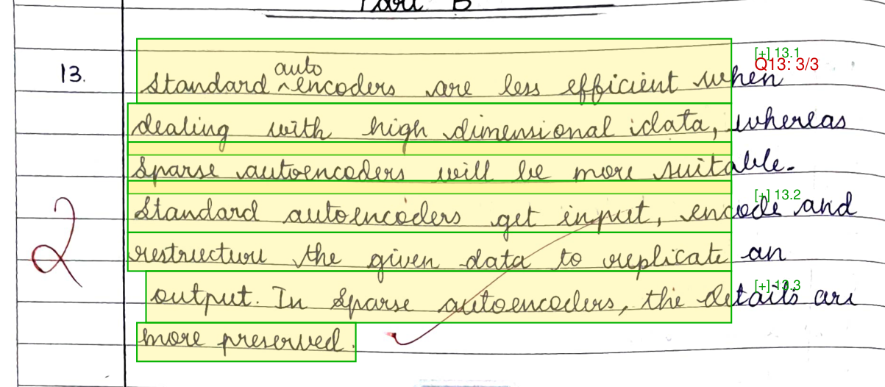
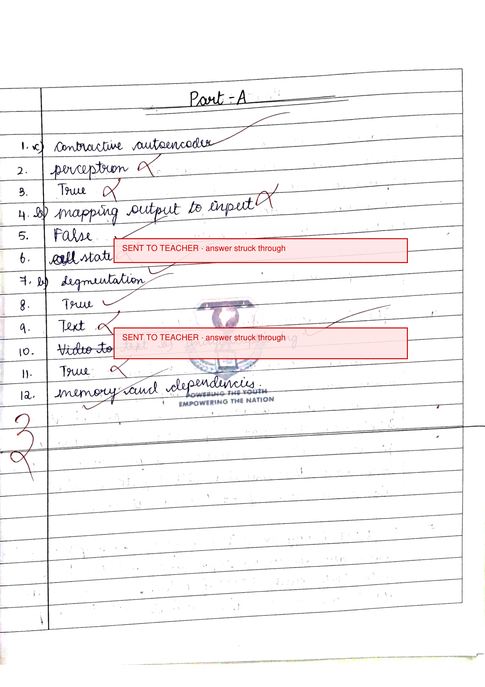

GradeMIND reads a handwritten answer script, then awards marks by arithmetic over a marking scheme. The model finds evidence. It never decides a number.
The original engine scored answers by sentence-embedding similarity. We measured it against two answers to the same question, and it preferred the wrong one.
A second case from the same audit: a student who wrote
ATP verbatim scored 0.651 against a
0.68 threshold, and was marked as having missed it.
This is not a tuning problem. Embedding similarity measures whether two
pieces of text are about the same subject. It does not measure whether
the student is right, and no threshold makes it. Lowering the bar to
catch 0.651 would match nearly anything.
Both figures are measurements of the engine we replaced, not of the one described below. They are the reason it was replaced.
A marking scheme lists value points. The matcher finds which span of the answer supports each one. A pure function turns those spans into a mark. Hover a criterion to see the words it was awarded for.
13. Standard autoencoders are less efficient when dealing with high dimensional idata, whereas sparse autoencoders will be more suitable. Standard autoencoders get input, encode and restructure the given data to replicate an output. In sparse autoencoders, the details are more preserved.
3 / 3 marks value-point-engine/0.1.0-demo
Note idata inside the first span, and look at it on the
script below. The page really does carry a stroke there that reads as an
i. We cannot tell you from the scan whether the student
wrote a stray mark or our model misread this writer’s lead-in
flourish, and we are not going to guess.
What matters is that nothing corrected it. The evidence a teacher reads
is what we read, exactly, and they can judge it themselves. A pipeline
that had quietly normalised this to data would have looked
better and told them less.

idata is in the
second line, and the caret inserting auto above the first
line is the student’s own correction.
Both are in the system as it stands. Neither is fixed, and neither produced a confident wrong mark.
We ran a second paper this week. Five questions, scored ten out of ten. Then we read the evidence text the marks point at.
Q4 "…a function calls itself to solvea smaller instance…" Q5 "…uses a hash functionto map keys to indices…" what the student actually wrote: Q4 "…calls itself to solve a smaller instance…" Q5 "…uses a hash function to map keys…"
Our line-joining code guesses whether a line break is also a word
break. If the next line starts with a short lowercase word, it joins
with no space. On this page it guessed wrong twice out of three times.
The one it got right, it got right by accident: and has
survived only because and happens to sit in a hardcoded
list of common words.
The transcription error below was the model’s, and it was random. This one is ours, and it fires identically every run. A model that occasionally invents a character is a risk you route around. Code that reliably corrupts the evidence an examiner reads is a defect you ship. No mark changed here, and that was luck: every affected criterion matched somewhere else in the sentence.
Same image bytes, same pinned model, same prompt version, one day apart. The two runs did not agree.
=== page 1, same cache key 4b7652ca59ce === -6. cell state +6. cell +state +3 bbox (0.01, 0.60) to (0.08, 0.69)
A 3 appeared that the student never wrote. We first
recorded that as the model inventing a character. It is not. Look at
the bounding box: x from 0.01 to
0.08, hard against the left edge, outside the margin rule.
It is on the page, in the examiner’s red ink, below question 12.
It is the teacher’s own mark.

3 is in the far left margin below
question 12, in the examiner’s ink, in the same hand as the ticks
beside every answer. The two banners are questions 6 and 10 being
routed to a teacher because the candidate struck their answer out.
So the model read it correctly. Our segmenter then read it as question 3, arriving after question 12, and question 12’s text was absorbed into a question that does not exist.
Q12 | OUT_OF_ORDER | NO (MANDATORY_HUMAN) Q3 | AMBIGUOUS_MAPPING | NO (MANDATORY_HUMAN)
It marked neither. It declined, named the reason, and handed both to a teacher. That is the direction we built it to fail in.
This is worse than a hallucination and better as a finding. A model that occasionally invents a character is random. Every marked script in existence has examiner ink in the margin, so this one is systematic, and we will meet it on every script we ingest. The two runs differ in whether the marginalia was captured at all, which is what makes it hard to see.
One thing did hold. The number the examiner wrote in that margin was a mark. It reached our pipeline as text, and it could not become a score, because marks come from arithmetic over a scheme and the model is never asked for a number. It became a wrong question number instead, which is a failure the system can detect and did. We fixed the blast radius, not the cause: an earlier version voided the whole script over one out-of-sequence number, and a student whose question 7 is smudged should not lose their question 13.
This list is longer than the feature list. That is the honest ratio at this stage, and every item is a measurement rather than a worry.
3 above, not a second one, and we had them recorded as two until we opened the scan. Nothing in the pipeline distinguishes the margin from the answer body. Every marked script has examiner ink in the margin, so this is systematic.The second paper scored 10 out of 10 on five questions. That number means very little: every answer on it is complete and correct, so an engine awarding full marks to everything would score identically. What it does establish is narrower. The paper and the scheme agree, five marks each came with a derivation, and none of them are void the way 14 and 15 are.